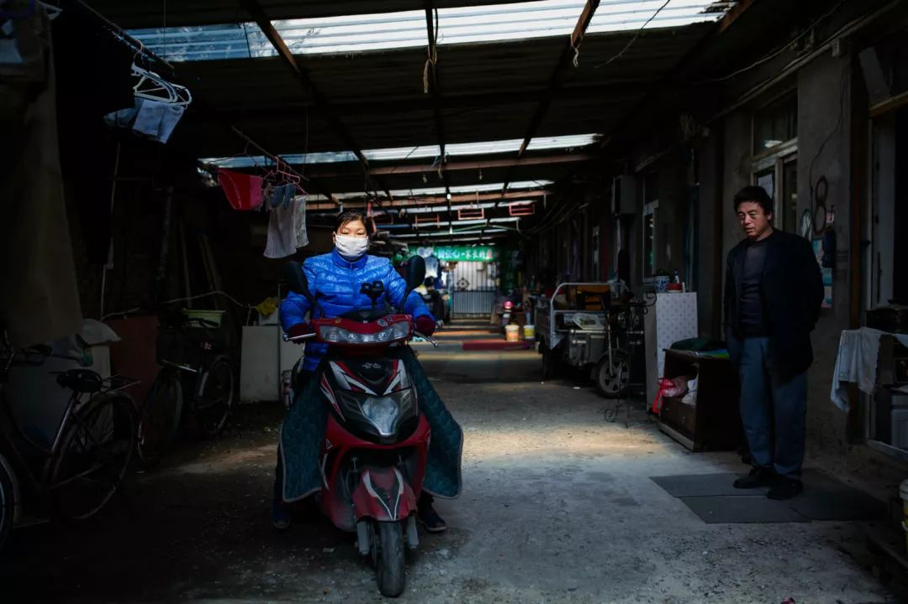
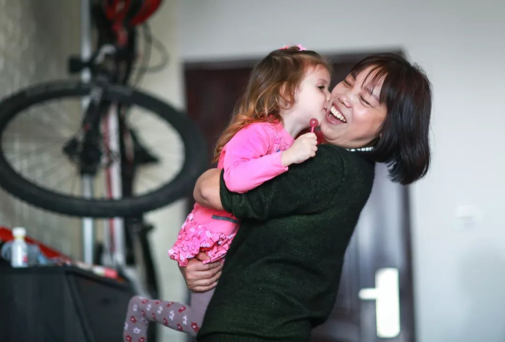
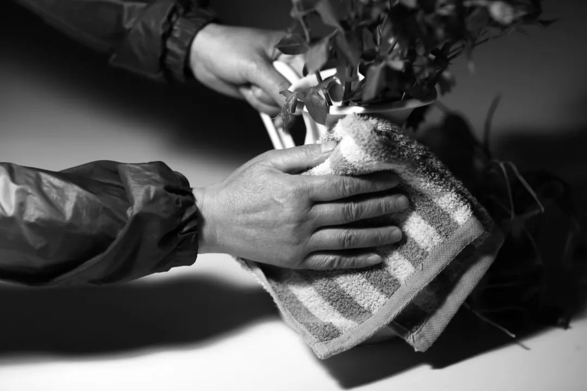

武汉呼叫：封城内外两个女孩的连线
原文链接 备份链接 我是肖途，2019 年加入 “BIE别的” 团队的编辑，武汉人。节前，我在最后一刻退掉了回武汉的车票，但这不代表我的春节过得有丝毫轻松。我的爸爸妈妈在武汉，我每天只能与他们视频通话。 早上醒来，北京下过雪了，一场没由来 …

摘要：她们曾为城市做出过看似微小但却关键性的贡献，值得在退休后得到来自社会的助力与尊重，她们的困境，也值得在春暖花开、疫情驱散后继续被审视与关注。
谁都绝不会想到，庚子鼠年的这个春节会是如此焦虑且悲壮。线上炽热，线下安静。整个民族又到了万众一心众志成城的时刻。
即使在这个真假善恶齐飞的非常时刻，有些日常的、线下的刚需也依然存在。比如家政。以下，是三位家政大姐的春节返工故事。

2月5日，农历正月十二，程大姐一大早就在朋友圈里发出了北京飘雪的小视频。她刚从四川回到北京返工。距离1月18日回家，在老家她只住了不到三周。
回京的一路上，“眼镜口罩手套都准备好了，我也不吃饭不跟人说话”。
听得出她对疫情发展还是有些恐慌。
“但越早走还好一点，越晚走人越多。”她说。

早在95、96年，程大姐就辞别家乡北上打工，中间她回乡生养过孩子，也南下广东打过工，但“因为适应不了那边太热的气候”，又辗转回到了北京。
节前，她有两份小时工工作，上午下午各一家，每天从早上六点半忙到晚上八点半，虽然辛苦但相对稳定。
但这个春节，在她还没返京时，疫情就以一种间接的方式让她丢掉了一份工作。
“下午这家是做旅游业的。他们告诉我，（因为疫情对旅游业的影响），就先不用人了；再需要人（家政服务人员），至少也要半年以后了。”
因为疫情，以旅游、餐饮、酒店等行业为代表的线下行业受到直接波及，相关行业从业人员或将面临暂时无工可做或收入减少的困境。
与此同时，为防控疫情，全国范围内有些地区已提倡“适当减少家政消费”。
谈及这些，程大姐只是有些无奈地说：“（有）影响也没办法。”
在程大姐的家政职业生涯中，最让她骄傲的，是做育儿嫂的时光。
“我把五个小孩带上了幼儿园！”她脱口而出：“现在最小的都十一二岁了！”
眼下，程大姐骨子里也依然还是想要工作的。她还想靠自己的双手做些什么，她也还有一些家庭负担。
2016年，她的丈夫不幸去世。靠着坚强和勤劳，她独自抚养大儿子，还在前年回老家买了新房。现在，程大姐的儿子长大了，但还需要赚一些新房装修的钱。
失去了一份小时工工作，就意味着失去了一份收入。非常时期，无处可怨，再想上新一份工，也并不容易。
“服务行业，就是（只在）用你的时候给工资。”
家在四川的刘大姐说，她最近的户外放风，也顶多是“在老家新修的水泥路上走走”。
她已经给自己买好了2月6日回京的火车票，不是高铁也不是快车，一共要在卧铺车厢里度过24个小时。
“快车是18个小时到，但没卧铺。我觉得卧铺车厢人员走动少，时间长一点也没关系。”
刘大姐今年刚过五十，1997年她来到北京，之后断断续续离京又回来，转眼就是二十多年。
赶在疫情爆发前，刘大姐从北京返回家乡准备过年。当时，她在北京的两户人家做小时工，“一家是老外，一家是外交官，他们对我都挺好”。
短短半个月，一场疫情，让原本稳妥的工作内容开始生变。
“老外”家计划着离开中国，还说“很多东西想留给她”；“外交官”家问她能否按时回甚至是早回来工作，家里确实缺人手。
于是，刘大姐决定早些返京，即便一路上有风险。

问她做家政有何感触，刘大姐思寻片刻说：“做家政就是最低级的（工作），其实很不容易。”
接着她举起了例子：
“年轻时没感觉，干活儿不用手套，有的住户还只能用冷水，也没想到可能得上风湿。我从去年开始爆发，手关节变形变大，手指僵硬，我才开始买手套，干活儿时也尽量用热水。现在的雇主，我用热水他们也不管。”
刘大姐也想过不做家政了，或许可以做做保洁？但那“还是要碰水”。其他的工作，她也是想不到：在茫茫大城市的人海中，自己还能做什么。

二十多年来，靠着她与丈夫在外的辛勤打拼，他们在老家镇上买了房，基本还清了债，儿子也长大了，经济负担减轻不少。
多年的辛劳开始逐渐得到回报。刘大姐也想回家了。看着父母日渐年迈，需要人照顾，她想着等把房子装修的钱还清，就真的不再做家政了。
并且，她还想好了回去做什么。“挨着中学换套房子，卖小吃，挣个日常的钱就好”。
她想住在靠自己打拼多年挣来的镇上新房里，多陪陪爸妈，追回年轻时那些没能抓住的家庭时光。
十多年前，接到孩子从老家内蒙古打来的电话时，远在北京打工的何大姐经常哽咽。
“那时家中日子特别艰难，孩子电话里一要钱，我就哽咽。家长会我也到不了……”
那些年，何大姐做过许多种工作。丈夫残疾，孩子还小，家庭的重担让她不得不一直在城市里工作下去。
眼下，她选择了提供居家家政服务，也就是在户主家从周一“住”到周五。
有些家政服务人员不大愿意选择住家服务，因为潜意识里会是24小时待命的精神状态，比较劳心劳神，并且难得自由。但何大姐不大介意。
她说：“我这个年龄，没有多少选择的余地。”

在很多家政服务人员招聘信息里，35—45岁年龄段是最受欢迎的。何大姐已经过了45岁，因此格外珍惜难得的工作机会。
在疫情仍在蔓延的当下，城市家庭对家政服务的需求依然存在。
“他家（户主）缺人手，让我这两天就过去。”何大姐说，“问了我有无离开北京，我说没有。”
这个春节，她和女儿在北京一起度过。女儿也在北京打工，最近嚷嚷着想回老家发展。
何大姐也不是没想过回老家安度晚年，但她至今都还找不到一条可以走得通的路：
“回去基本上没有养老保险……回去干啥都要投钱，借钱不好借，跟银行贷款吧又没抵押，投不起。”
“想回去没法办，不想回也没法办。你说回家能干啥呢？”

回不去的家乡，扎不下根的城市，加之年龄越来越大，没有什么“选择余地”的何大姐选择了活好当下，珍惜工作，及时返工。毕竟，疫情过后，一切依然照旧。
以她为代表的整个中年家政服务人员群体的晚年困境，也依然值得在春暖花开、疫情驱散后被审视与关注。
她们曾为城市做出过看似微小但却关键性的贡献，值得在退休后得到来自社会的助力与尊重。
延伸阅读
劳动者的新年，有时充满看不见的心酸。

请尊重原创，保护版权
本文为尖椒部落原创作品。如需转载，请在后台回复【转载】二字。并保留以下作者信息：

原文链接 备份链接 我是肖途，2019 年加入 “BIE别的” 团队的编辑，武汉人。节前，我在最后一刻退掉了回武汉的车票，但这不代表我的春节过得有丝毫轻松。我的爸爸妈妈在武汉，我每天只能与他们视频通话。 早上醒来，北京下过雪了，一场没由来 …
原文链接 备份链接 ——《疫期特别篇》：疫期的形式主义与基层减负—— 我想我是开心的，因为我的《口罩下的形式主义和基层减负》受到了人民日报、半月谈、新华社的关注，随后官媒纷纷发声，痛斥个别地方官僚在疫期大搞形式主义占用基层干部本来就捉襟见 …
原文链接 备份链接 编者荐语： 马子本来计划春节出游，结果回来过个年，就因疫情封城动弹不得了。我俩见个面都难。天门疫情确实严峻，希望大家能多给予关注。瘟疫面前，命无贵贱，人人平等。 © 图文 阅路山 2020年2月4日 立春 武汉封城的 …
原文链接 备份链接 作者：北林 排版：北林 图片：北林 特别感谢：老B、小Y、老H、N、蛋仔 特殊内容：兄弟父亲为武汉医生感染逝世、姐姐感染 声明内容：本文昨日发送后因争议暂删除，现重发，内容仍未删改，由于实际完成于昨日，彼时具有强烈情 …
原文链接 备份链接 - 疫 情 之 下 - 只有在这样的特殊时刻，我们才体会到平平常常的日子是多么美好，多么幸福…… ” 疫情爆发得如此迅猛，让所有人始料未及。 己亥年腊月二十九，公历2020年1月23日，我去单位上年前最后一天班，那时我 …